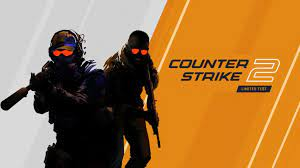
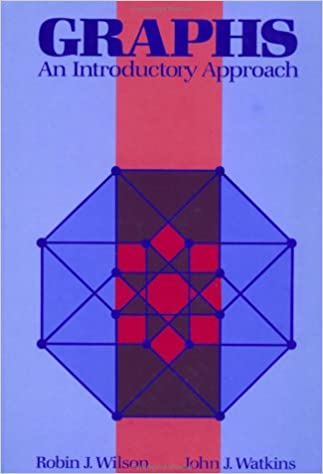
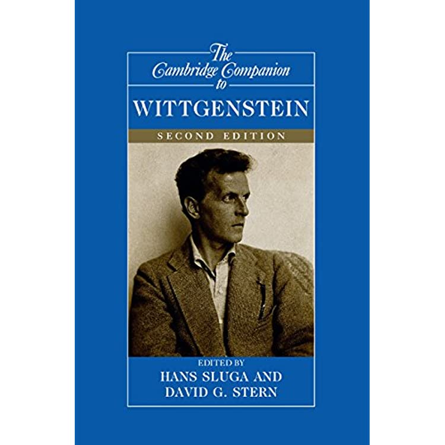

About Me

Nishant Kumar Singh
Hey there! I am a Rising Junior at Indian Institute of Goa majoring in Computer Science and Engineering. I am
interested in Machine Learning and Math.
Education
| Academic Year |
Standard |
School |
| 2009-2018 |
1st-10th |
AFS |
| 2019-2021 |
11th-12th |
KVS |
| 2021-2025 |
1st year - 4th year |
IIT Goa |
Course @IIT Goa
Spring Semester
- CS102
- CS212
- ID601
- Numerical Simulation
- Prof. Mantu Santra and Prof. Santosh Kumar Das
- CS222
- Algorithm Design
- Prof. Aripta Korwar and Prof. Rahul C. S.
- CS211
- Computer Architecture
- Prof. Sharad Sinha
Autumn Semester
- CS220
- Data Structures and Algorithms
- Prof. Sreejith A.V. and Prof. Rahul C.S.
- CS221
- Discrete Structures
- Prof. Saurabh Trivedi
- CS210
- Digital System and Design
- Prof. Sharad Sinha and Prof. Nandakumar Nambath
- CS230
- Probability Theory
- Prof. Satyanath Bhat
- HS201
- Economics
- Prof. Sunil Paul
Hobbies, Interests, Extra Curricular Activities, Projects
Some of my hobbies are
- Gaming
- I specifically like the games, CSGO, Dota 2 and League of Legends. I am one of the very few 2% to have received the beta for the upcoming game CS2.

- Coding
- I code daily on Leetcode and you can find me on the contest rankings of Codechef and Codeforces every once
in a while.
- Reading History books
- I suggest reading Vodka Politics: Alcohol, Autocracy, and the Secret History by Mark Lawrence
Some of my interests are
- Math
- I would like to read geometric graph theory when I do get the time, currently I am reading Galois theory
from Dummit and Foote
- Theretical Computer Science
- I am reading D.B. West to get better at graph theory in CS. Here's another cool book referenced inside D. B. West.

- Philosophy
- I suggest reading The Cambridge Companion to Wittgenstein to get a better understanding into the mind of
one of the greatest thinkers of the last century.
